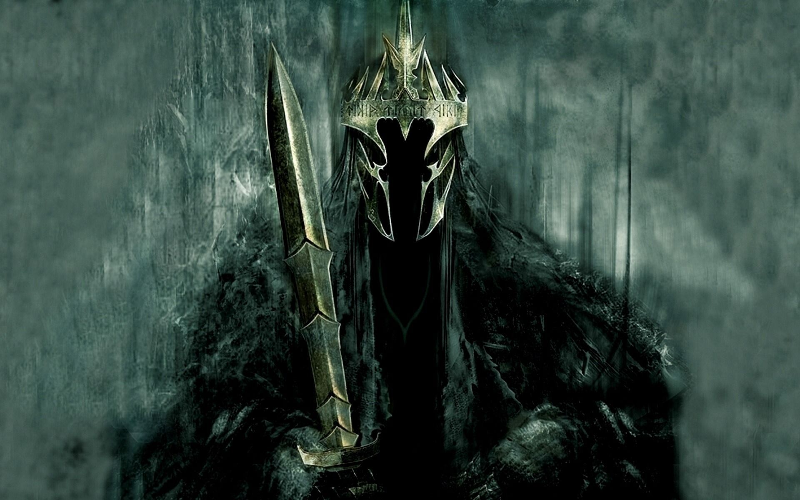

|
Elijah Wood |
Frodo Bolsón |
Protagonista, portador del Anillo. |
|
Ian McKellen |
Gandalf el Gris |
Mago y guía de la Comunidad. |
| |
Viggo Mortensen |
Aragorn |
Heredero al trono de Gondor y miembro de la Comunidad. |
|
Sean Astin |
Samwise Gamgee |
Jardinero y fiel amigo de Frodo |
|
Orlando Bloom |
Legolas |
Elfo y arquero, miembro de la Comunidad. |
|
John Rhys-Davies |
Gimli |
Enano guerrero, miembro de la Comunidad. |
 |
Andy Serkis |
Gollum/Smeagol |
Criatura obsesionada por el Anillo. |
 |
Billy Boyd |
Peregrin "Pippin" Tuk |
Hobbit, primo de Frodo y miembro de la Comunidad. |
|
Ian Holm |
Bilbo Bolsón |
Tío de Frodo y antiguo portador del Anillo. |
|
Christopher Lee |
Saruman |
Mago y antagonista secundario. |
 |
Brad Dourif |
Gríma Wormtongue |
Consejero corrupto del rey Théoden. |
|
John Noble |
Denethor |
enescal de Gondor y padre de Boromir y Faramir. |
|
Bernard Hill |
Théoden |
Rey de Rohan |
|  |
Viggo Mortensen |
Sauron |
Antagonista principal |